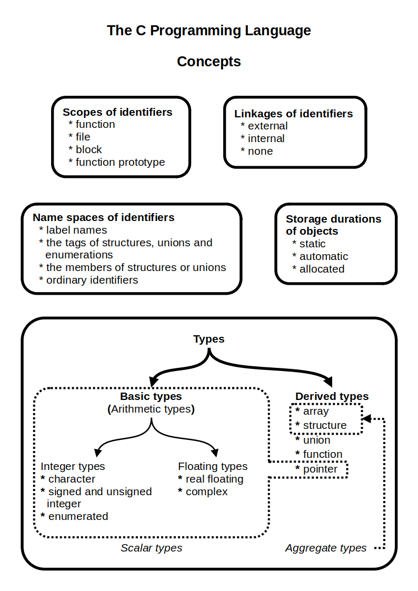
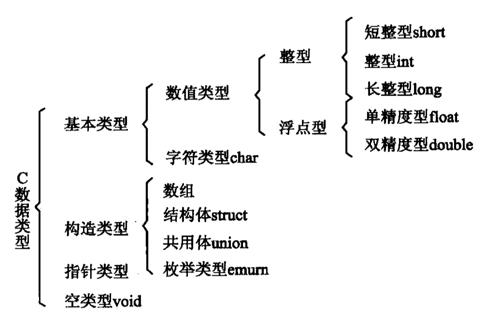
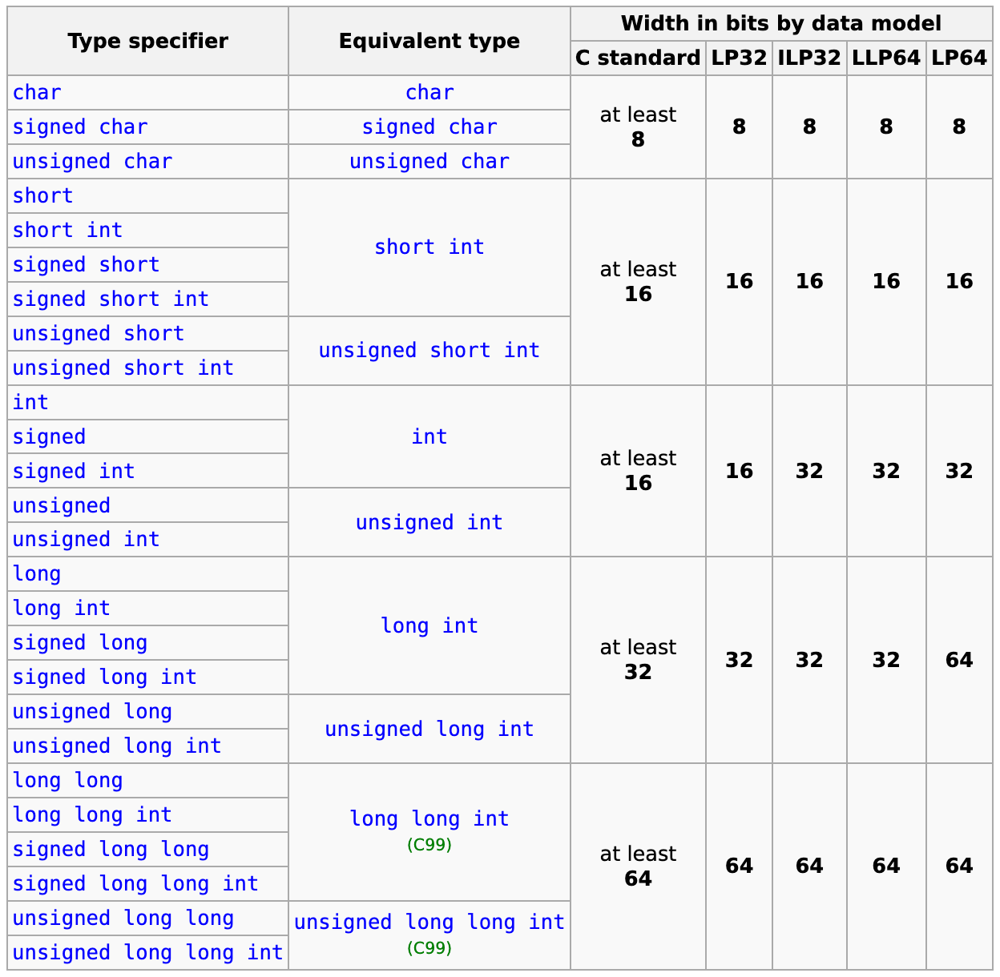
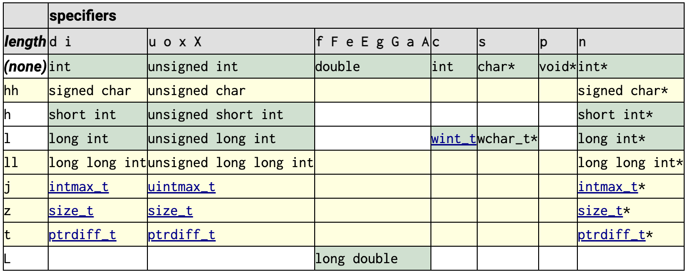

C Data Types
A C program, whatever its size, consists of functions and variables. A function contains statements that specify the computing operations to be done, and variables store values used during the computation.
在 C 程序里，函数（function）就是指令，变量（variable）就是数据。数据类型定义了变量的存储和访问属性，约束了其大小边界（size/boundary）、取值范围（value range）、解释呈现（interpretation/representation）和可操作集（operation set）。
C Concepts#

C Program#
C Programming Language(2e) - Brian W. Kernighan, Dennis M. Ritchie, 1988
1.1 Getting Started
A C program, whatever its size, consists of functions and variables. A function contains statements that specify the computing operations to be done, and variables store values used during the computation.
1.2 Variables and Arithmetic Expressions
A declaration announces the properties of variables; it consists of a [type] name and a list of variables.
《C语言标准与实现》姚新颜，2004
03 从汇编语言开始：简单地说，一个程序最重要的两个部分分别是数据和对数据进行操作的指令。因此，我们必须要清楚地了解一个程序的数据与指令是如何被组织起来的。
08 C 语言的变量：在 C 程序里，变量（variable）就是数据，函数（function）就是指令。
《汇编语言(4e)》王爽, 2019
1.5 指令和数据：指令和数据是应用上的概念。在内存或磁盘上，指令和数据没有任何区别，都是二进制信息。CPU 在工作的时候把有的信息看作指令，有的信息看作数据，为同样的信息赋予了不同的意义。
C data types#
In the C programming language, data types constitute the semantics and characteristics of storage of data elements. They are expressed in the language syntax in form of declarations for memory locations or variables. Data types also determine the types of operations or methods of processing of data elements.
The C language provides basic arithmetic types, such as integer and real number types, and syntax to build array and compound types. Headers for the C standard library, to be used via include directives, contain definitions of support types, that have additional properties, such as providing storage with an exact size, independent of the language implementation on specific hardware platforms.
C 语言中的基本数据类型: char、short、int、long，float、double。
C 语言包含的数据类型如图所示：

The GNU C Reference Manual - 2 Data Types
Type support#
C language Basic Concepts - Type
- Type classification
- Compatible types
- Composite types
- Incomplete types
- Type names
Type groups
- object types: all types that aren't function types
- character types: char, signed char, unsigned char
- integer types: char, signed integer types, unsigned integer types, enumerated types
- real types: integer types and real floating types
- arithmetic types: integer types and floating types
- scalar types: arithmetic types, pointer types, and nullptr_t(since C23)
- aggregate types: array types and structure types
- derived declarator types: array types, function types, and pointer types
Constructing a complete object type such that the number of bytes in its object representation is not representable in the type size_t (i.e. the result type of sizeof operator), including forming such a VLA type at runtime,(since C99) is undefined behavior.
- Additional basic types and convenience macros: <stddef.h>
-
Fixed width integer types (since C99)
- Types & Macro constants: <stdint.h>
- Format macro constants: <inttypes.h>
-
Numeric limits: <limits.h>, <stdint.h>
The following table summarizes all available integer types and their properties:

printf format specifier#
C data types - Main types - Format specifier
printf(3) - Linux manual page @opengroup
- Flag characters
- Field width
- Precision
- Length modifier
- Conversion specifiers
printf: cppreference.com, cplusplus.com

Fixed width integer types (since C99)
- Format macro constants - Defined in header <inttypes.h>
- Format constants for the fprintf family of functions
- Each of the
PRImacros listed here is defined if and only if the implementation defines the corresponding typedef name. - 预处理 dump 相关格式宏：
echo "#include <inttypes.h>" | cpp -dM | grep 'FMT\|PRI'。
fmtlib/fmt: A modern formatting library
Comparison of C++ Format and C library's printf
Standard Variants#
机器字长（Machine Word - __WORDSIZE）和平台采用的数据模型（Data Models）决定了 long 和 pointer 的位宽（size in bytes、width in bits）。
GCC/Clang 编译器预定义的宏（Predefined Macros）中，涉及到机器字长并决定数据模型相关的宏：
__SIZEOF_LONG__@intel__SIZEOF_POINTER__,__POINTER_WIDTH__
Types varying by data model 的相关类型及相关的宏：
-
wchar_t: 实现相关__WCHAR_TYPE__,__WCHAR_WIDTH__,__SIZEOF_WCHAR_T__
-
size_t: 机器字长相关__SIZE_TYPE__,__SIZE_WIDTH__,__SIZEOF_SIZE_T__
-
intptr_t/uintptr_t: 机器字长相关__INTPTR_TYPE__,__INTPTR_WIDTH__;__UINTPTR_TYPE__,__UINTPTR_WIDTH__
-
ptrdiff_t: 机器字长相关__PTRDIFF_TYPE__,__PTRDIFF_WIDTH__
wchar_t#
- <wchar.h>(since C95): Extended multibyte and wide character utilities
- <wctype.h>(since C95): Functions to determine the type contained in wide character data
wchar_t: integer type that can hold any valid wide character(typedef)
aapcs64 - 7 The standard variants - 10.1.2 Types varying by data model:
| C/C++ Type | ILP32 (Beta) | LP64 | LLP64 |
|---|---|---|---|
| wchar_t | unsigned word | unsigned word | unsigned halfword |
在 MSVC - C++ type system 中定义 wchar_t 位宽为 2 bytes。
相关宏：
__WCHAR_TYPE____SIZEOF_WCHAR_T__,__WCHAR_WIDTH__
size_t#
Type support - <stddef.h>
size_t: unsigned integer type returned by the sizeof operator(typedef)
aapcs64 - 7 The standard variants - 10.1.4 Additional types:
| Typedef | ILP32 (Beta) | LP64 | LLP64 |
|---|---|---|---|
| size_t | unsigned long | unsigned long | unsigned long long |
相关宏：
__SIZE_TYPE____SIZEOF_SIZE_T__,__SIZE_WIDTH__
rpi4b-ubuntu 的 /usr/include/stdint.h 中定义了：
intptr_t/uintptr_t#
Fixed width integer types (since C99) - <stdint.h>
intptr_t: integer type capable of holding a pointeruintptr_t: unsigned integer type capable of holding a pointer
相关宏：
__INTPTR_TYPE__,__INTPTR_WIDTH____UINTPTR_TYPE__,__UINTPTR_WIDTH__
指针位数一般和 __WORDSIZE 相等：
- sizeof(
__INTPTR_TYPE__) = sizeof(__UINTPTR_TYPE__) =__SIZEOF_POINTER__ __INTPTR_WIDTH__=__UINTPTR_WIDTH__=__POINTER_WIDTH__=__WORDSIZE
rpi4b-ubuntu 的 /usr/include/stdint.h 中定义了：
ptrdiff_t#
Type support - <stddef.h>
ptrdiff_t: signed integer type returned when subtracting two pointers(typedef)
aapcs64 - 7 The standard variants - 10.1.4 Additional types:
| Typedef | ILP32 (Beta) | LP64 | LLP64 |
|---|---|---|---|
| ptrdiff_t | signed long | signed long | signed long long |
相关宏：
__PTRDIFF_TYPE____PTRDIFF_WIDTH__
rpi4b-ubuntu 的 /usr/include/stdint.h 中定义了：